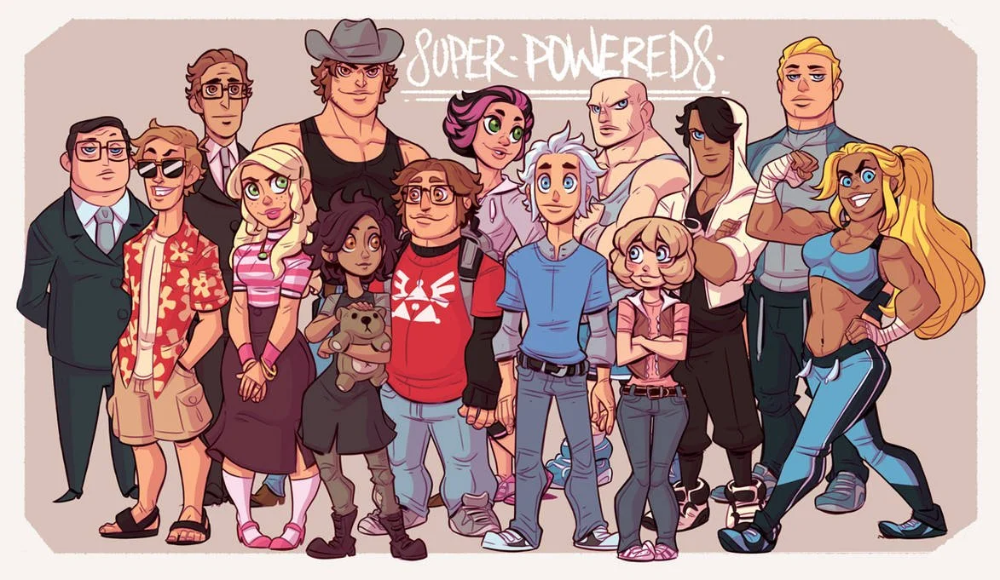

Super Powereds: Underdogs with a Secret

A superhero series set at a college with a Hero Certification Program. The twist is it's about a group of "Powereds," people with superpowers they can't control, basically the underdogs compared to the "Supers" who've got their shit figured out.
Found family, and a secret to keep
What makes it work is the found-family vibe and the college dynamic. The Powereds get a secret shot at fixing their control so they can pass as Supers, and hiding that from everyone is just genuinely fun to watch.
[Why it works for me] Structurally it's not far off an academy progression story — a class of underdogs training, ranking up, and getting tested. Same itch, capes instead of stat sheets.
7.5/10. Easy recommend if the academy setup is your thing.